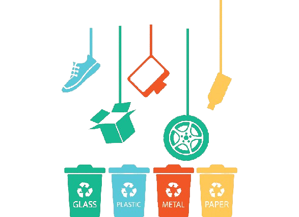

O que são Resíduos Sólidos?
Resíduos sólidos é todo tipo de resíduo resultante de atividades humanas. Os resíduos recicláveis secos são compostos principalmente por plásticos, metais, papeis, papelão, embalagens cartonadas e vidros variados. Podem ser tanto domiciliares como provenientes de limpeza urbana.